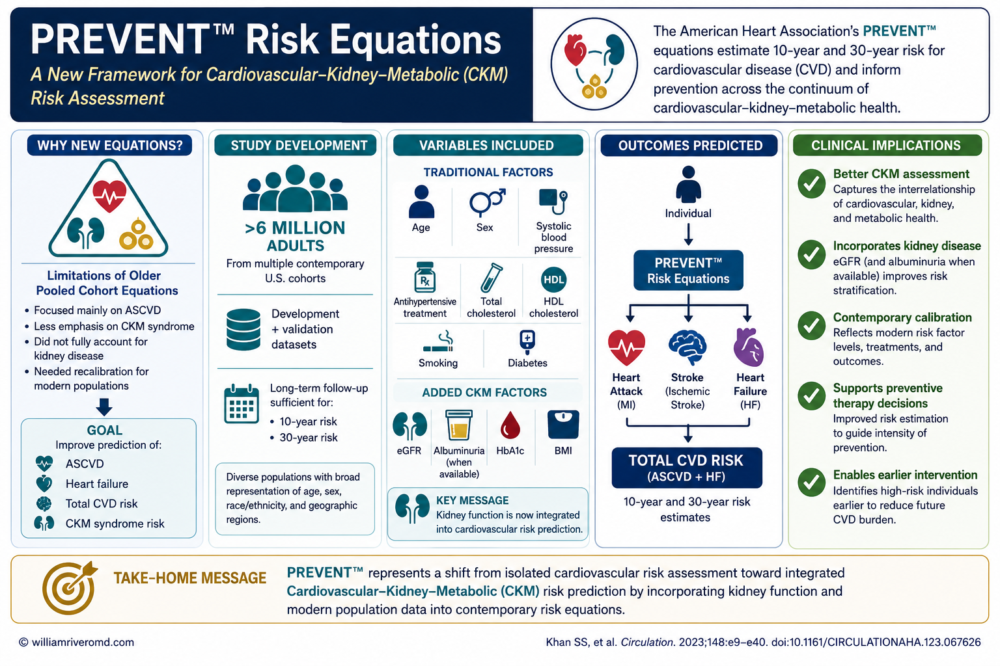

- Choose your cholesterol units (mg/dL or mmol/L) to match the lab report.
- Enter age (30–79) and select sex.
- Enter total cholesterol, HDL, systolic blood pressure, and eGFR.
- Answer the yes/no items: blood-pressure medication, diabetes, current smoking, and statin use.
- Optional: add BMI to also see your heart-failure risk, and your urine ACR to switch to the kidney-enhanced PREVENT model.
- The 10-year risks update live with a risk band and suggested next steps.
All computation runs in your browser; no values are stored or transmitted.

The AHA PREVENT equations integrate kidney function (eGFR and albuminuria) with traditional risk factors to estimate 10- and 30-year risk of total cardiovascular disease — atherosclerotic events plus heart failure. Khan SS, et al. Circulation. 2024;149(6):430–449.
- CKM
- Cardiovascular–kidney–metabolic
- CVD
- Cardiovascular disease
- ASCVD
- Atherosclerotic cardiovascular disease
- HF
- Heart failure
- eGFR
- Estimated glomerular filtration rate
- HbA1c
- Glycated haemoglobin
- BMI
- Body-mass index
- PCE
- Pooled Cohort Equations (older risk score)
When to Use
Use the PREVENT (Predicting Risk of cardiovascular disease EVENTs) equations to estimate an adult’s 10-year risk of total cardiovascular disease — a combined endpoint of atherosclerotic disease (heart attack, stroke) and heart failure. PREVENT was developed by the American Heart Association from a contemporary, diverse U.S. population of over 6 million people and is recommended for primary prevention in adults aged 30–79 who do not already have known cardiovascular disease.
Why it fits kidney patients
PREVENT is the first major risk score to include eGFR in its base equation, and offers an enhanced model that adds the urine albumin-to-creatinine ratio (UACR). Because reduced eGFR and albuminuria are powerful, independent predictors of both heart attack and heart failure, PREVENT estimates risk more accurately in people with CKD than older tools that ignored the kidneys.
When NOT to use it
PREVENT is for primary prevention. It does not apply to people who already have established cardiovascular disease (prior heart attack, stroke, or revascularisation), to those younger than 30 or older than 79, or to acute illness. It estimates risk — it does not, by itself, decide treatment. Results must be interpreted by a clinician within the whole clinical picture.
Pearls & Pitfalls
Total CVD vs ASCVD
The headline PREVENT number is total CVD, which uniquely includes heart failure. The ASCVD sub-result (heart attack & stroke only) is the figure that maps to the familiar treatment-decision thresholds used for statins and blood-pressure therapy.
Add the kidney and BMI inputs
Entering a urine ACR switches the tool to the kidney-enhanced equation and refines the estimate — especially valuable in CKD and diabetes. Entering BMI unlocks the heart-failure risk estimate. Use a true quantitative UACR, not a dipstick.
Pitfalls
(1) Risk is for prevention only — not for people with existing heart disease. (2) PREVENT estimates U.S.-derived risk; in Filipino patients use it as a guide and weigh local factors. (3) It informs, but never replaces, a shared decision with your doctor about statins, blood-pressure targets, and kidney-protective therapy.
Why Use It
Two people with identical cholesterol can face very different futures once kidney function and blood pressure are accounted for. PREVENT integrates the strongest routinely available predictors — age, sex, cholesterol, blood pressure and its treatment, diabetes, smoking, statin use, and eGFR (plus optional BMI and UACR) — into a single calibrated probability. Translating a vague sense of “high risk” into a number helps decide how intensively to pursue prevention: statins, blood-pressure control, weight and glucose management, and — in kidney or diabetic patients — the SGLT2 inhibitors, finerenone, and GLP-1 agonists that protect heart and kidney together.
AHA PREVENT — 10-Year Cardiovascular Risk
Enter the values below. Total CVD and ASCVD need the core inputs; add BMI to also see heart-failure risk, and a urine ACR to use the kidney-enhanced model.
⚗ American Heart Association PREVENT equations (Khan SS et al., Circulation 2024). Risk = 1 / (1 + e−L), where L is a sex-specific linear predictor of centred, transformed inputs (age, non-HDL and HDL cholesterol, systolic BP, diabetes, smoking, eGFR, BMI, and anti-hypertensive/statin use, with interaction terms). Entering a urine ACR switches to the albuminuria-enhanced equation. Exact published coefficients are used; this base/UACR model omits the optional HbA1c and social-deprivation predictors. Validated for ages 30–79 for primary prevention only — it does not apply to people with established cardiovascular disease, and is a population-derived estimate requiring physician interpretation.
Next Steps
Use the result to support — not replace — clinical judgment.
- Discuss the ASCVD band with your doctor: it informs whether a statin and tighter blood-pressure control are warranted.
- If you have CKD, diabetes, or a high heart-failure risk, ask specifically about SGLT2 inhibitors, finerenone, and GLP-1 agonists, which lower both cardiovascular and kidney risk.
- Re-run the estimate as your blood pressure, cholesterol, eGFR, and albuminuria change — trend it over time.
- Address the modifiable inputs: smoking cessation, weight, glucose, blood pressure, and lipids.
Evidence & References
Model & inputs
PREVENT provides sex-specific equations for several outcomes. This tool implements the 10-year equations for total CVD, ASCVD, and heart failure, using the published base model and the albuminuria (UACR) model. The linear predictor centres and transforms each input (e.g. age per 10 years; cholesterol in mmol/L; systolic BP and eGFR as piecewise terms) and adds age-interaction terms, then converts to probability with the logistic function.
| Element | Detail |
|---|---|
| Outcomes shown | 10-yr total CVD (ASCVD + heart failure), 10-yr ASCVD, 10-yr heart failure (needs BMI) |
| Kidney inputs | eGFR (base model); urine ACR (enhanced model, used when entered) |
| Risk formula | Risk = 1 / (1 + e−L); L = constant + Σ(β × transformed input) |
| Cholesterol units | mg/dL ÷ 38.67 = mmol/L (used internally) |
| Validated range | Ages 30–79, primary prevention |
ASCVD risk bands (for context)
| 10-yr ASCVD | Category |
|---|---|
| < 5% | Low |
| 5 – 7.4% | Borderline |
| 7.5 – 19.9% | Intermediate |
| ≥ 20% | High |
These categories were defined for ASCVD and traditionally guide statin and blood-pressure decisions; total CVD (the PREVENT headline) runs higher because it also counts heart failure.
References
- Khan SS, Matsushita K, Sang Y, et al. Development and Validation of the American Heart Association’s PREVENT Equations. Circulation. 2024;149(6):430–449.
- Khan SS, Coresh J, Pencina MJ, et al. Novel Prediction Equations for Absolute Risk Assessment of Total Cardiovascular Disease (PREVENT). Circulation. 2024.
- Coefficient implementation cross-checked against the open-source preventr package (Mayer M.).
- Kidney Disease: Improving Global Outcomes (KDIGO) CKD Work Group. KDIGO 2024 Clinical Practice Guideline for CKD. Kidney Int. 2024.